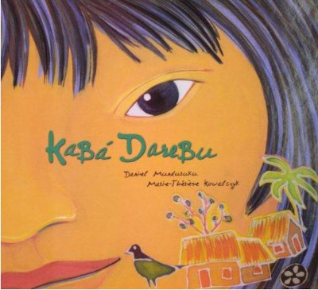

Diversidade na ilustração infantil
Releitura da capa do livro "o cabelo de lelê", por Isabela Lima
Os ilustradores são os principais atores da literatura infantil. Afinal, é ele quem dá imagens, cores e formas às ideias do texto ou conta a história por meio de ilustrações. Os ilustradores devem colaborar com os autores para garantir que as ilustrações tenham o poder de evocar curiosidade e emoção. O livro ilustrado desperta a imaginação, aflora sentimentos e possibilita a construção de significados, e por esse motivo é de importância imensurável que elas estejam presentes na inserção da leitura na vida das crianças. A estimulação visual é muito importante nesta fase. É por meio deles que as crianças aprendem a distinguir cores, formatos, reconhecer figuras e até desenvolver melhor a fala, entre outras habilidades. Outro papel fundamental das ilustrações é ajudar as crianças a reconhecerem e identificarem-se com os personagens. Sabemos que as influências recebidas durante a infância podem ter um enorme impacto na forma como eles veem o mundo à medida que crescem. Ou seja, escrever e ilustrá-lo é uma responsabilidade. Por isso, ao planejar o visual do seu trabalho e como será sua peça, tenha em mente que a diversidade é extremamente importante e as crianças podem se identificar com múltiplas identidades mudando suas perspectivas sobre si mesmas e sobre o mundo, afirmando as identidades plurais.
Portanto, nessa matéria vamos conferir alguns autores e ilustradores que atuam no campo da literatura infantil trazendo ilustrações criativas e repletas de diversidade! Ao conhecer o trabalho de outros profissionais podemos ter uma boa visão sobre quais leituras são interessantes para as crianças, e caso você trabalhe com ilustração, poderá ter uma nova inspiração em seus trabalhos!
Confira alguns ilustradores:
Da minha janela, Otávio junior
"Da Minha Janela", escrito por Otávio Júnior, é um livro infantil que nos leva a uma viagem imaginativa pelos olhos de uma criança em uma comunidade no Rio de Janeiro. Esta história é uma celebração da imaginação, da descoberta e do apreço pelas pequenas alegrias da vida, como também encoraja as crianças a explorarem o mundo ao seu redor de uma maneira única e especial. Com ilustrações encantadoras, criadas por Vanina Starkoff, e uma narrativa envolvente, "Da Minha Janela" valoriza a diversidade encontrada nessa comunidade única.
Kabá Darebu, de Daniel Munduruku
Kabá Darebu é um menino indígena que nos conta com sabedoria e poesia, o jeito de ser de sua gente, os Munduruku. Com ilustrações maravilhosas de Marie-Thérèse Kowalczyk, mostra uma diversidade de cores.
Amoras, de Emicida
A partir de um rap que um dos artistas brasileiros mais influentes, Emicida, cria seu primeiro livro infantil, mostrando através de seu texto e das ilustrações de Aldo Fabrini, a importância de nos reconhecermos no mundo e nos orgulhamos de quem somos, desde criança e para sempre.
Com qual penteado eu vou?
Para homenagear seu bisavô nessa data tão importante, suas bisnetas e seus bisnetos irão escolher penteados lindos para participarem da comemoração. E cada uma e cada um irá presentear seu bisa com a virtude mais poderosa que tem. Da autora kiusam de oliveira, e as ilustrações cuidadosas e cheias de beleza por Rodrigo Andrade, esse livro nos traz acolhimento e admiração.